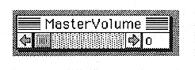

Return to previous page ｜ Return to menu ｜ Go to next page
-
Master volume window
The - master volume window is always displayed on the screen. You can change the master volume. At the same time, the master volume setting value is displayed.

Return to previous page ｜ Return to menu ｜ Go to next page